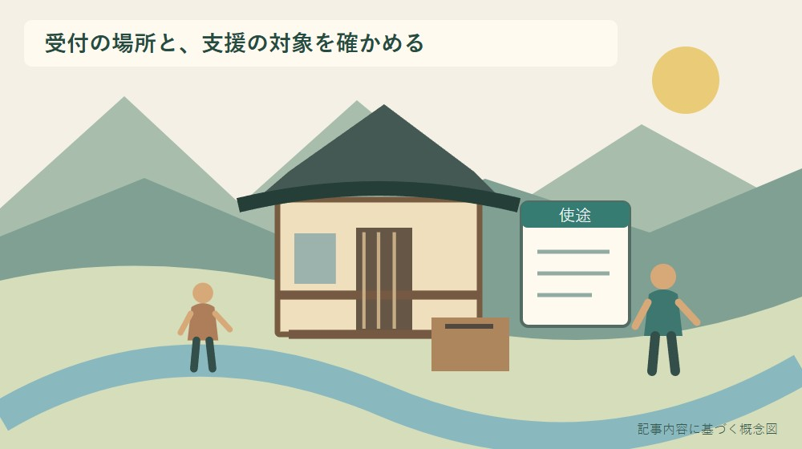
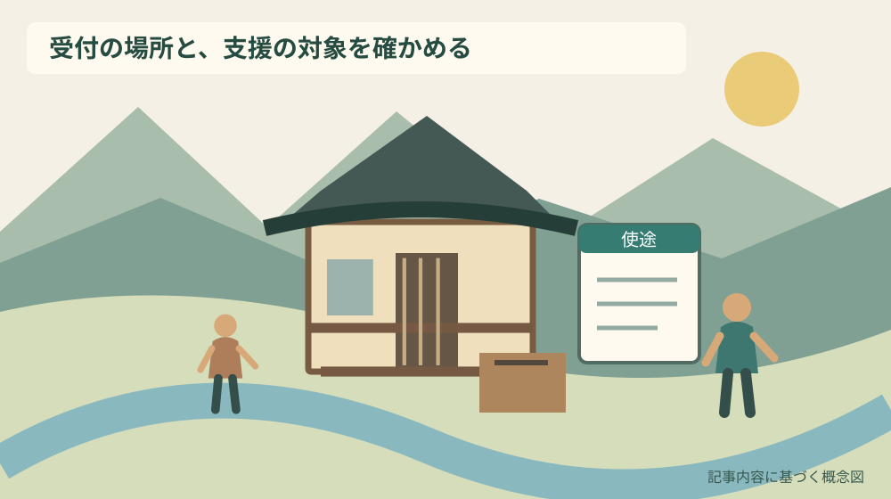
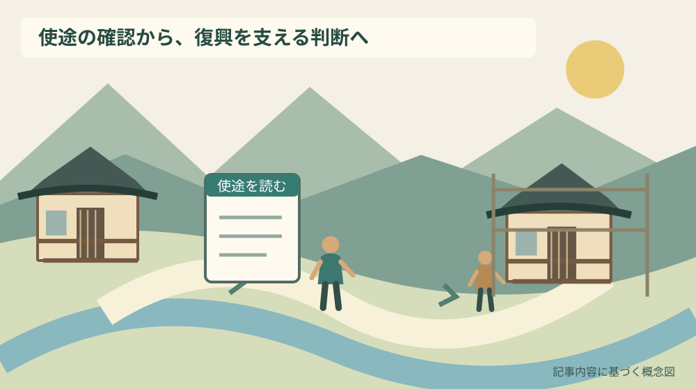

小國神社の義捐金｜社殿復興の支援先を確認

Q. 小國神社の「神社義捐金」は、どこへの支援ですか？
A. 小國神社の公式トップページは、令和8年熊本地震で被災した神社の復興に役立てる「神社義捐金」を案内し、受付場所を小國神社拝殿としています。2026年9月30日確認時点で、受付終了日、送金先名、配分方法、領収書や税の扱いは確認できません。今日は受付掲示の使途を一つ確かめ、分からない点は受付側へ聞いてから判断してください。
社殿を守る人の復興負担から、支援の対象を読む
小國神社が案内する神社義捐金は、熊本地震で被災した神社の復興に役立てるための支援です。社殿や境内を守る人には、祈りの場を保つ仕事に加えて、被災後の復興への対応が重なります。森町から支援を考える人は、まず何を支える受付なのかを確かめられます。
大石浩之（磐田市／不動産業）です。私は、支援したい気持ちを急がせず、使途を知ってから決める順序を大切にします。寄せる側の善意と、受け付ける側の案内が同じ対象を指していることを確認する。その一手間が、納得して支援する土台になります。
この記事は、2026年9月30日に取得した小國神社の公式案内をもとにしています。義捐金の受付を代行したり、送金を取り次いだりするものではありません。確認できた使途と場所、確認できない条件を分け、参拝時に見るべき掲示を整理します。
事実整理｜対象は熊本の被災神社の復興
小國神社の公式トップページには、令和8年熊本地震の「神社義捐金」の案内があります。説明本文は、熊本地震で被災した神社の復興に役立てるとし、受付場所を小國神社拝殿と明記しています。見出しだけでなく、使途を説明する本文で確認した内容です。
小國神社は森町一宮にありますが、この受付の支援対象は熊本の被災神社です。森町内の社殿修理のための募金と読み替えないでください。支援を受け付ける場所と、支援が向かう対象の地域が異なることは、案内を読む際の最初の確認点です。
個別案内ページも今回の確認では取得できました。ページには2026年9月21日の日付があり、拝殿前で実施している旨の説明があります。公式トップでは受付場所を拝殿と案内しています。現地の具体的な位置や方法は、当日の掲示と受付側の案内に従ってください。
公式サイト内には、一覧の掲載日と個別ページの日付が異なる表示があります。この記事では、その違いから受付開始日を推定しません。どの日に始まったかより、2026年9月30日に確認した使途と受付案内を、現在の判断材料として示しています。
気象庁は2026年9月24日付で「令和8年熊本地震」について第12報を公表しています。地震についての情報提供と、神社による義捐金受付は発信主体が違います。気象庁の発表を、この義捐金の受付方法や配分先を裏付ける資料としては扱いません。
受付場所、支援対象、配分先を三つに分ける
神社義捐金の案内を読むときは、「どこで受け付けるか」「何のために使うか」「どこへ送るか」を分けると、分かった部分と残る疑問が見えます。小國神社の案内では、受付場所と被災神社の復興という目的を確認できました。配分の詳細までは確認できていません。
「熊本の被災神社」とあることから、特定の一社へ全額が渡ると判断することはできません。個別の受取先の名称や配分割合は、確認した本文にありません。写真に写った建物だけが対象とも限らないため、画像の印象から使途を狭めないようにします。
送金先の名称と、現地で受け付ける団体の名称も同じとは限りません。今回、送金経路を具体的に確認したわけではありません。経路を知ってから支援したい場合は、そのことを受付側へ尋ねます。情報がないまま、この神社が直接工事を発注すると推測しないでください。
私は、説明が短いことを直ちに不審と結び付けるつもりはありません。一方で、短い説明の空欄を善意で埋めることもしません。確認したい項目を一つ選び、公式の受付へ質問する。その答えを聞いてから判断できる余地を残したいと考えます。

森町の文化財から、建物と営みの両方に目を向ける
森町の「文化財」ページには、小國神社十二段舞楽が国指定の民俗文化財として掲載されています。文化を守るという言葉には、建物だけでなく、そこで受け継がれる営みへの関心も含まれます。ただし、森町の文化財指定は、熊本の支援先を特定する資料ではありません。
町の「小國・天宮両社の舞楽」では、舞の装束や所作などが紹介されています。文化が抽象的な名称だけでなく、人の動作や道具を通じて伝わることを知る資料です。この受付とは別の地域資料として読み、義捐金が特定の舞楽へ配分されるとは結び付けません。
私は、社殿の復興を考えるとき、建物を直す費用だけでなく、使える状態を取り戻すまでの担い手の時間にも目を向けたいと考えます。今回の被害額や必要人数を把握したわけではありません。分からない規模を語るより、確認できた復興という目的から考えます。
森町の木造社寺の備えについては、文化財防災の記事で扱っています。災害前に備えることと、被災後に支援することは別の行動ですが、建物を使い続ける条件へ関心を持つ点ではつながります。
良い点｜参拝の場で支援の入口が分かる
小國神社の義捐金案内の良い点は、支援の目的と受付場所が公式トップページに示されていることです。参拝時に掲示を見て初めて知った人も、帰宅後に発信主体の説明へ戻れます。人づての話だけで判断せず、自分で確認できる入口があります。
私は、森町から離れた被災神社への関心を、参拝する場所で持てる点にも意味があると考えます。遠方へ行けない人でも、支援の対象を知るきっかけになります。ただし、現地へ行けるかどうかと、寄付するかどうかは、それぞれの事情で決めてよいことです。
「復興に役立てる」という目的が書かれているため、通常の参拝に伴うお金と区別して考えられます。何のための受付なのかを確認せず、近くにある箱へ入れるという判断を避けられます。現地では、神社義捐金の掲示と受付位置が一致しているかを見ます。
公式の案内を家族へ共有するときも、対象を一文で添えられます。「小國神社で、熊本の被災神社の復興を支える受付が案内されている」と伝える形です。私の評価や家族への呼びかけを加える前に、確認できた事実を短く渡せる点を評価します。
注文したい点｜終了日や配分の詳細は未確認
2026年9月30日に確認した案内では、受付終了日、送金先の名称、配分方法を確定できませんでした。私は、継続して案内する際には、受付中かどうかを確かめる場所と、支援先を知るための情報があると助かると考えます。現時点で分からないことは、そのまま残します。
終了日が書かれていないことは、いつ参拝しても必ず受け付けているという保証ではありません。日を改めるなら、出発前に公式案内を見直します。現地に着いて受付が分からない場合は、別の箱や窓口を自己判断で代わりにしないで、神社へ尋ねてください。
領収書の発行や税の扱いも、確認できた本文には示されていません。必要な場合は、支援する前に受付側へ確認します。控除の適否など個別の税務判断は、必要書類と支援先を確認したうえで税務署や税理士へ相談し、この記事で結論を出さないでください。
森町のふるさと納税の使途を扱う記事とは、今回の受付の主体も仕組みも異なります。寄付という共通点だけで、町への寄附の手続や返礼、税の扱いを神社義捐金へ移して説明することはできません。
判断を急がせないため、金額より先に使途を読む
小國神社の神社義捐金について、この記事では勧める金額や最低額を示しません。確認した本文から金額条件を確定できず、支援する人の家計も異なるからです。まず使途を知り、自分が納得できる範囲で判断する順番を勧めます。
家族で参拝する場合も、その場で全員に同じ判断を求める必要はありません。個人で決めるのか、家族のお金から出すのかで、相談の範囲が変わります。家族の共有の支出にするなら、帰宅後に対象を伝え、合意してから考える方法もあります。
私は、掲示を読んだ日に決めないことも尊重します。支援先や使途をもう一度確かめたい、今月の支出を見てから考えたいという理由があってよいと思います。迷いを隠して急ぐより、分からない項目を一つ減らして帰ることを、その日の成果にできます。
支援案内を知人へ送るときは、公式ページへのリンクと確認日を添えます。受付が永続するかのような文や、金額を募る独自の呼びかけを足す必要はありません。自分が確認できていない送金方法や口座を、別の投稿から組み合わせて紹介しないようにします。

対案・結論｜今日、受付掲示の使途を一つ確かめる
小國神社へ参拝する予定がある人が今日できる行動は、義捐金の受付掲示で使途を一つ確かめることです。現地へ行かない日なら、公式ページの目的の一文を読み、見直せるように保存します。金額を決める前に、支援の対象を自分の言葉で説明できる状態を作ります。
現地では、掲示の名称、目的、受付場所の順に確認します。神社義捐金という名称と、熊本の被災神社の復興という説明が対応しているかを見ます。受付の方法が分からない場合は、箱や机の見た目だけで判断せず、神社の案内を受けてください。
配分先を確かめたいなら、「この義捐金の支援先や配分について、確認できる案内はありますか」と尋ねる方法があります。答えをその場で得られない場合は、確認先を教えてもらい、判断を持ち帰れます。疑問を持つことと、受付する人を責めることは別です。
領収書が必要な人は、支援した後で初めて希望を伝えるより、事前に発行の可否と手順を確かめます。発行されるとこの記事が保証することはできません。必要な条件が満たされるかを先に聞く方が、受付側にも、自分の記録にも無理を残しません。
家族に残す記録｜支援した事実と、確認した使途
神社義捐金について家族に残すメモには、名称、受付した場所、日付、公式の使途説明を分けて書きます。支援を行った場合の金額などは、自分の家計管理に必要な範囲で残します。募金箱の写真を撮ることだけを、記録の方法にする必要はありません。
写真撮影の可否が分からない場合は、掲示の内容を手帳に書き、帰宅後に公式ページと照らし合わせる方法があります。他の参拝者や受付の人が写り込む撮影を、確認のためと称して無断で行わないようにします。記録と周囲への配慮は両立できます。
家族へ説明するときは、「被災神社の復興という目的を確認した」と、「個別の配分先まで確認した」を区別します。後者を確かめていなければ、分からないままと伝えます。善意の支援ほど、説明を大きくせず、確認した範囲に戻れる記録が役立ちます。
祭りを支える担い手の負担の記事では、当日の外側の準備や片付けを扱っています。今回も、支援の案内をする人の仕事を増やさないよう、質問を整理して聞き、同じ家族で何度も説明を求めない工夫ができます。
復興の結果を、この受付の案内だけで決めない
神社義捐金の受付案内は、復旧工事の完了報告ではありません。受付があることから、被災した建物が直った、必要な費用が集まった、特定の祭典が再開したと結論づけることはできません。復興の進み方を知りたい場合は、その後に公表される報告を確かめます。
今回の記事では、被害棟数、復旧費、義捐金の総額を確認していません。数字がないために支援の意味がなくなるわけではありませんが、規模を印象で膨らませる理由にもなりません。確認できる使途を述べ、確認できない数字は載せない形にします。
私が家族へ案内するなら、「支援したら何が変わるか」をその場で保証しません。復興には建物や地域ごとの事情があります。目的に納得して協力することと、成果を自分の都合で急がせないことを、同時に大切にしたいと考えます。
大石の視点｜使途を知ってから決める自由を残す
私は、支援を急がせず、使途を知ってから決める自由を残します。社殿を守る人の負担を思うことと、自分の家計や疑問を確認することは矛盾しません。分からないまま金額だけ決めるより、どこを支えるのかを一つ確かめる方が、納得のある協力になります。
私なら、拝殿の案内を読む場面で、まず受付の名称と目的を手元のメモへ書きます。これは現地で実際に行った体験談ではなく、私の判断の手順です。小國神社で受け付けることと、熊本の被災神社へ向かう支援であることを、別々に理解するためです。
一方で、確認を丁寧に書くほど支援への関心を冷ましてしまわないか、私には迷いもあります。それでも、分からない点を隠して背中を押す書き方はしません。公式の説明へ戻り、自分で決められる材料を渡すことが、このブログの役目だと考えます。
まとめ｜復興支援の対象を一文で言えるようにする
小國神社の神社義捐金は、熊本地震で被災した神社の復興に役立てると案内されています。受付場所は公式トップで小國神社拝殿とされています。今日は使途の一文を確認し、必要なら受付側へ質問してから、支援するかどうかを判断してください。
終了日、送金先名、配分、領収書や税の扱いは、今回確認できた範囲では未確認です。日を改めて参拝する場合は、最新案内へ戻ります。森町で知った支援の入口を、誰かに決断を迫る材料にせず、文化を守る仕事を考える材料として持ち帰れます。
よくある質問
小國神社の神社義捐金について、使途と受付条件を確認します。
小國神社自身の修理のための義捐金ですか？
公式トップページは、熊本地震で被災した神社の復興に役立てる神社義捐金と説明しています。受付場所は森町の小國神社拝殿ですが、森町内の小國神社の修理費を募る案内とは読めません。個別の受取先名や配分方法は確認できていないため、その詳細を知りたい場合は受付側の案内で確かめてください。
どこで、いつまで受け付けていますか？
小國神社の公式トップは受付場所を拝殿とし、個別案内には拝殿前で実施する旨があります。2026年9月30日に確認した本文では受付終了日は分かりません。いつでも受付中と考えず、参拝前に公式案内を見直してください。現地での具体的な受付位置と方法は、当日の掲示や神社の案内に従います。
領収書や寄付の税の扱いは確認できますか？
2026年9月30日に確認した小國神社の案内からは、領収書発行の有無や税の扱いを確定できません。領収書が必要な人は支援前に受付側へ確認してください。控除など個別の税務判断は、支援先や必要書類を確かめて税務署または税理士へ相談します。ふるさと納税と同じ手続とは扱えません。
実家の建物や管理の情報を整理する場合は、実家カルテも利用できます。売却未定でも使える本サイト運営会社の民間サービスです。森町や各施設の公式手続ではなく、利用は任意です。
公式情報源
2026年9月30日確認（2026年9月確認）。開催・受付・公開状況や数値は変わる場合があります。行動前に公式案内を確認し、個別の税務・契約・工事などの判断は担当窓口や専門家に相談してください。